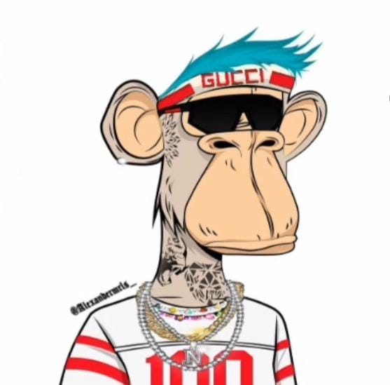

Acerca de mi

Yo...
Soy un estudiante de Programación en el Centro de Estudios científicos y Tecnológicos NO.9 “Juan de Dios Bátiz”, Cursando actualmente el 4.º semestre en la carrera de Técnico en programación con aspiración a ser un desarrollador o tener una profesión involucrada en el desarrollo y la programación.